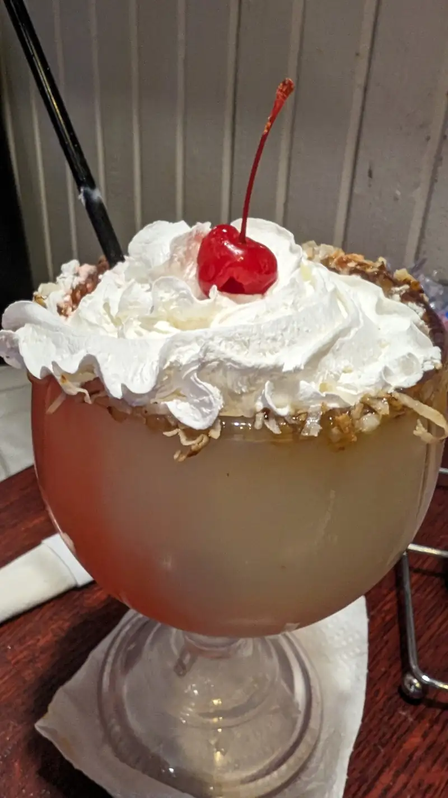
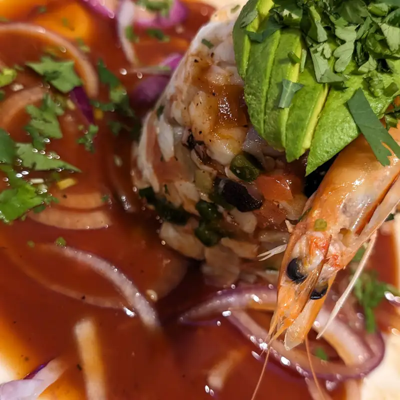
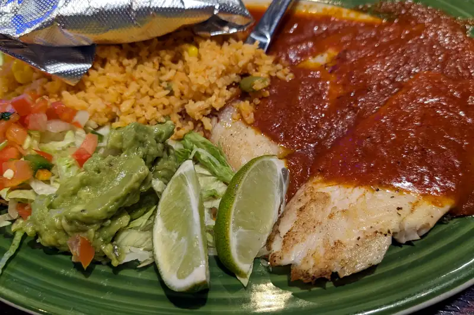
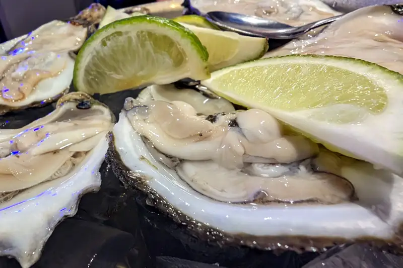
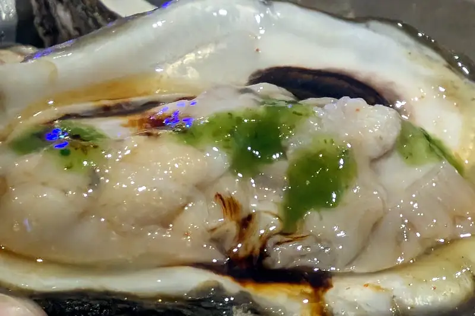

Restaurantes - Rio Bravo Richardson
Antojos? sí, pero... no de esos... no se si es algo así como que ya me hace falta ir p'al rancho, pero llevaba un par de meses con ganas de ir a un restaurante que hay por aquí donde dicen que sirven ostiones y pues, otros mariscos también. Y resulta que el lugar ese, o al menos la sucursal que nos quedaba cerca ese día se pone sus moños los fines de semana y tooooodo su estacionamiento es solamente con valet... helll no... no tengo ni el más mínimo interés por que alguien más maneje mi carro... tal vez nos vimos mamones, pero me le quedé viendo al wey del valet y nos fuimos :P ... elomadre.. al cabo que del otro lado del freeway había otro lugar de mariscos!
Ya que llegamos ahí pedímos los tragos coquetos (una piña colada) que pues... sabe a licor, pero también sabe a piña colada
 {kind=link}
Ya para los platillos, una torre de mariscos Río Bravo que lleva pulpo, pescado y camarón
 {kind=link}
Definitivamente, sí... lleva camarón
{kind=link}
Filete a la diabla que acompañan con lo típico.. EXCEPTO que en ese papel aluminio que se ve en la foto.. uno como mexicano se imagina un par de tortillas de maíz 'edá? .. poes NOOO, era... pan, como telera con mantequilla... ok, no era lo que esperaba, pero sirvió muy bien para absorber la salsa y poder dejar limpio el plato
 {kind=link}
Y a lo que vinimos: ostiones!
 {kind=link}
Ehh.. hubiera preferido que tuvieran un poco más de su licor, pero tal vez así son los de este lado del mundo; no todo es como en Kansas, Dorothy
 {kind=link}
Y qué pues? Volveríamos? Seh.. aunque tal vez intentemos entre semana o algo así, porque en fin de semana tienen un rato de música en vivo seguido por un rato de karaoke... este... si te gusta es tipo de cosas, supongo que está a toda madre, pero si no ... nom'as es motivación para comer más rápido y largarte :| ...